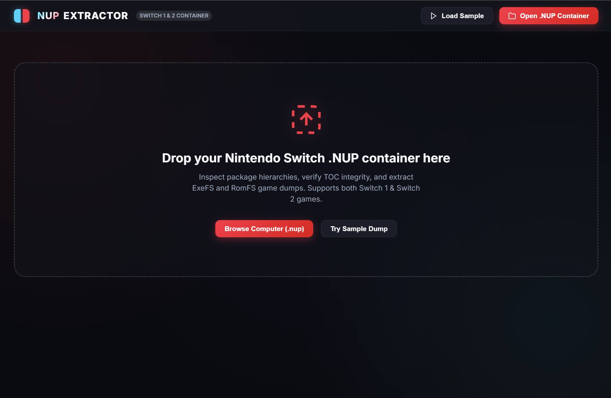
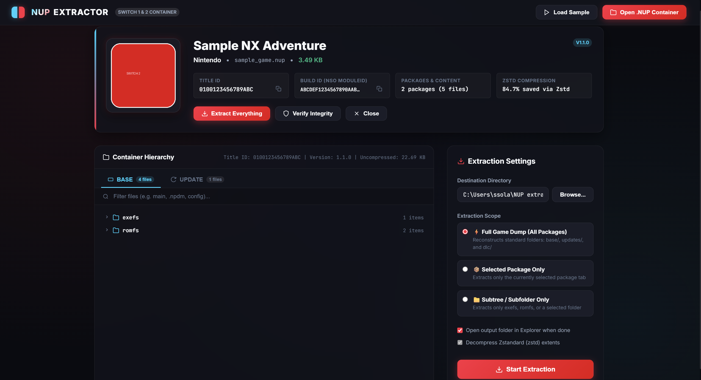
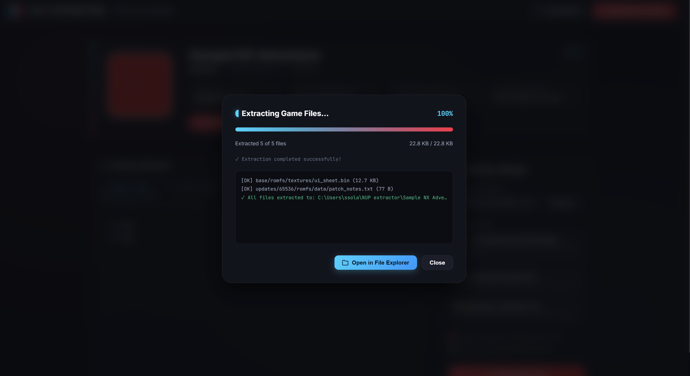

An open-source, high-performance desktop application engineered to inspect, decompress, and extract .nup (NX Package) archives with zero-copy memory mapping, hardware-accelerated Zstandard decompression, and a Joy-Con dark UI.

Designed from the ground up to replace clunky CLI scripts and sluggish interpreters with a rock-solid, production-grade native application.
Employs OS kernel-level MemoryMappedFile for instantaneous index parsing and random-access chunk reads without loading multi-gigabyte files into RAM.
Direct C# binding via ZstdSharp.Port with SIMD acceleration for multi-gigabyte-per-second decompression throughput on RAW and ZSTD chunks.
Pure Windows GUI application (WinExe) with zero black command prompt windows, zero Python dependency, and no freezing or antivirus sandboxing latency.
Extract the full archive or cherry-pick specific game packages (RomFS, ExeFS, DLC, Updates) and individual directories via the interactive visual tree.
Throttled UI progress dispatching eliminates UI lag, displaying live MB/s transfer speed, elapsed time, ETA countdown, and item counts.
19 automated xUnit unit tests verifying Superblock parsing, bad magic rejection, streaming decompression, directory traversal guards, and integrity checks.
Automatically checks GitHub Releases, notifies with Update / Remind Me Later / Skip controls, downloads and replaces executable seamlessly in-place.
Experience a sleek Joy-Con neon red and cyan aesthetic with clean glassmorphic panels and intuitive file navigation.


Full compliance with the official NX Package Specification (SPEC v1).
Validates 64-byte binary header with NUP\x01 magic, version 1, TOC offset, TOC size, TOC entry count, and archive-level metadata JSON chunk.
Binary entry records containing path offset, chunk offset, stored size, original size, and compression flag (0x00=RAW, 0x01=ZSTD).
Pure Win32 Subsystem execution via Microsoft Edge WebView2 direct asynchronous IPC, eliminating Console QuickEdit pausing and lag.
Standalone 64-bit Windows executable. Zero installation required, zero external dependencies. Extract anywhere and launch immediately.